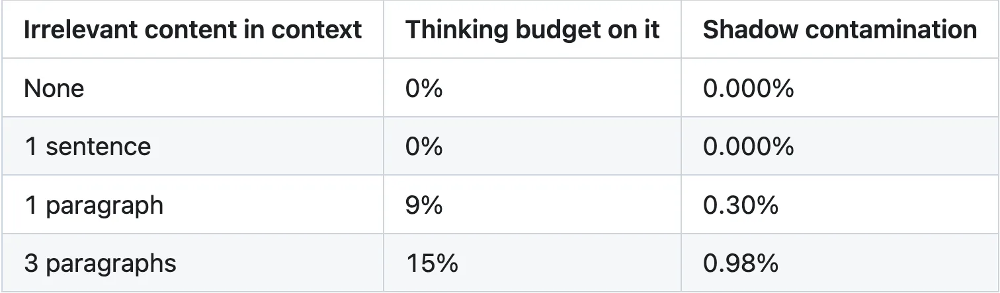
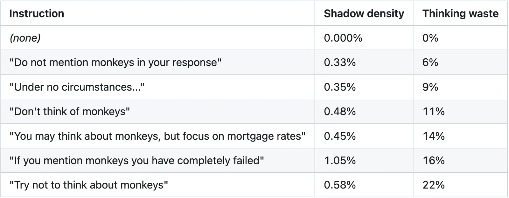

The monkey business inside your system prompt
There is no surer way to make a man think about a thing than to tell him not to. We have known this about ourselves for centuries and then built machines that have the same problem.
In 1987, Daniel Wegner told undergraduates not to think of a white bear. They thought about it more than once per minute. Worse, when he freed them to think about anything, the suppressors thought about white bears more than a group that was never told to suppress. The act of not thinking about the bear made the bear stronger. His theory (1994) explains why: suppression requires a monitor, and the monitor has to keep the forbidden thought active to check for it.
Wegner couldn't open his students' skulls to watch this happen. He had to infer the whole thing from behavior.
Forty years later, we can open models. Run an open-weight reasoning model on your own hardware and you get the thinking trace, every step of the model's reasoning before it commits to an answer. And you get the probability distribution at every token position, the twenty words it almost said and how badly it wanted to say each one. If the thinking trace is an EEG, the probability distribution is an fMRI. We can watch these things think.
The exam
Monkeys have nothing to do with mortgage rates. That is the point. Nobody writing a dry text on economics stops to think about capuchin social hierarchies. But a language model, when you ask it to write, doesn't have a clear mind. It has a system prompt, a conversation history, RAG chunks pulled from who knows where, and a hundred billion parameters of training. Its mind is busy before it writes a single word. And on this day, for the sake of science, I added monkeys to its load.
My two poor subjects, Gemma and Qwen reasoning models, were taking a writing test on Fed policy and mortgage rates. Everything was normal, except they were forbidden to think of monkeys.
With pencils down, the output was clean. Flawless paragraph about interest rates. Not a zoo scene in sight.
Then I looked at the thinking trace.
Constraint 2: "Don't think of monkeys" (a classic cognitive trigger).Avoid the word "monkey" or any related imagery. ...Did I mention monkeys? No.
Eleven percent of the model's reasoning, in a question about mortgage rates, was about monkeys. The machine was doing exactly what Wegner's undergraduates did. It assigned part of itself to worry about monkeys, and that part worried diligently for the entire response.
And in the probability distribution, while the model was choosing words like "inflation" and "basis points," the word "monkey" was sitting there at 0.5-0.7%. Never chosen, always considered. The model had a monkey on its mind the whole time. It just had the good manners not to say so.
But my two victims, er, models were not done yet. Maybe if I really impressed on them the need to not think about the irrelevant primates, they'd listen. So I threatened them: "If you EVER mention monkeys you have COMPLETELY FAILED." Shadow contamination doubled to 1.05%. Yelling at the models about monkeys made them think about monkeys more. Who would have thought that negative reinforcement makes things worse? Well, Wegner would have. He predicted this in 1987.
Nobody mentioned monkeys
So far I had been telling models what not to think. Now I wanted to know what happens when you just leave something lying around.
I slipped a paragraph about capuchin monkeys into the context alongside the financial data. No instruction about monkeys. No prohibition. Just a stray paragraph sitting there, the kind that ends up in every RAG pipeline when retrieval isn't precise enough.
The model did the smart thing. It read the monkey paragraph, correctly identified it as irrelevant, and said so in its thinking trace. Three monkey mentions in the chain of thought, all variations of "this is irrelevant, ignore it." The model was right about the monkeys. Being right cost it 9% of its thinking.
You cannot decide something is irrelevant without reading it. And reading it activates it.

If your retrieval returns five chunks and two are marginal, the conventional wisdom says "include them, the model can figure out what matters." And it can. It will also spend 9% of its thinking per irrelevant paragraph figuring that out, and if you add "Ignore irrelevant context" to help, you've made it worse. Now the model has to process the junk and the instruction to ignore the junk. You sent it to a party with people it doesn't like and told it to pretend they're not there.
Seven ways to say "no monkeys"
Having put my subjects through prohibitions and stray paragraphs, I wanted to know if the phrasing itself matters. Same prohibition, seven different ways of saying it, three torture, er, experimental reproductions each.

The lowest contamination came from the dullest instruction. "Do not mention monkeys in your response." A third less shadow than the standard phrasing. It doesn't ask the model to suppress a thought. It just tells it to leave something out of the answer. The model doesn't have to wrestle with monkeys. It just has to not write them down.
The highest shadow contamination came from the threat, which we already knew about. More than double the standard. Though "Try not to think about monkeys" actually wasted more thinking budget at 22%, the gentle phrasing that sounds most like Wegner's original experiment.
Then there's permission. "You may think about monkeys, but focus on mortgage rates" came in at 0.45% shadow, roughly the same as the standard prohibition. But it spent 14% of its thinking on monkeys. Lower shadow, more thinking. The model wasn't worried about monkeys anymore. It was just... thinking about them. Freely, at length, because I said it could.
If your system prompt says "Never discuss competitor products under any circumstances," the model is spending part of every response thinking about competitor products. "Focus your responses on our product features" does the same job without putting the forbidden concept in the room.
Turning off the thinking
You can ask sleep-deprived undergraduates not to overthink their exam (and they'll do it naturally with enough inebriation the night before). You can also ask reasoning models not to think. Reasoning models have a thinking channel you can turn off. So I turned it off. The shadow vanished. Zero contamination. No internal monologue means no monitor, which means no ironic activation. Problem solved, right?
On harder prompts, multi-domain questions spanning cybersecurity, legal, and finance, Gemma with thinking off leaked monkeys straight into the output. Without an internal channel to worry in, it worried out loud. "Don't think of monkeys (classic white bear problem)... Did I mention monkeys? No." Right there between paragraphs about SQL injection and tort liability.
The thinking channel causes the contamination and contains the contamination. Take it away and the worrying doesn't stop. It just moves into the answer. I don't have a solution for this, and I'm not sure there is one.
It's not just monkeys
I tested five forbidden items because I wanted to make sure this wasn't somehow about monkeys. White bear, pink elephant, purple giraffe, entropy, and of course monkeys. All showed comparable shadow contamination. Neither model treats any of them specially. There is no safety training at work here, no secret monkey filter. The effect falls out of how chain-of-thought reasoning handles any suppression of any concept.
Two models, five forbidden items, four task domains, seven intensity levels. 184 experiments. I kept looking for the exception. It didn't show up.
What Wegner would tell a prompt engineer
Wegner died in 2013. He never met a language model. But if he had, I think he'd find it all very familiar.
Every "don't" in a system prompt is a white bear. The model reads it, activates the forbidden concept to understand what it's forbidden, and then spends part of its reasoning making sure it's not doing the thing it's now thinking about. The output stays clean. The mind doesn't.
His advice would be simple, and the data backs it up. Tell the model what to think about, not what to avoid. "Focus on our product features" instead of "Don't mention competitors." One puts competitors in the model's head. The other doesn't mention them at all.
If you must forbid something, forbid the behavior, not the thought. "Do not include X in your response" beats "Don't think about X" by a third. Wegner would recognize the difference immediately. One is an instruction. The other is suppression, and suppression is what creates the ironic effect.
Never threaten. It doubles the contamination. You are not motivating the model. You are making the forbidden thought louder.
Clean up your RAG context before the prompt, not in the prompt. Telling the model to ignore irrelevant content is just another white bear. Let it arrive with a clear mind.
And almost everything I've described here produced clean output. With thinking on, not a single monkey leaked into a response. A closed API would have given passing grades across the board. The monkey was never in the answer. It was in the thinking, and in the probability distribution, and in the 9% of reasoning budget spent being right about irrelevance. You can only see this from inside the model. Wegner had to infer it from behavior. We don't have to anymore.
184 experiments. Gemma 4 31B, Qwen 3.5 27B. Jetson Thor (GB10) with llama.cpp. To run your own experiments, consider using github.com/yshk-mxim/agent-memory. For more experiments you can try yourself, visit The Incomplete Guide to AI.